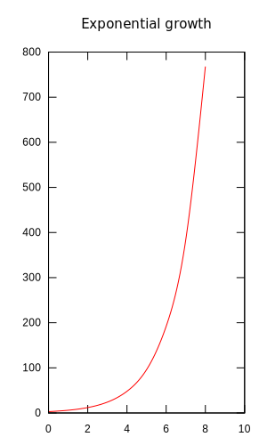

Numbers
Introduction to part 2
We’ll pick up where we left off with our breakdown of the three basic
qualities of quantities
If you’re jumping in here make sure you reload numbers1.hs,
along with numbers2.hs from this section’s work.
- cardinality, or how many?
- ordinality, or what order?
- enumeration, or, generally, how do we count out things?
In this section we’ll tackle enumeration.
To be sure, enumeration, or as it is also called combinatorics, is a huge and active field of mathematics, parts of which are included in introductions to Discrete Mathematics, and in general, are fair game throughout a CS degree. This means our approach with CIMIC will have to be rather pruned and directed, since the combinatorics tree is big and bushy.
Truth be told, the first time you hear about enumeration as a beginning Haskeller isn’t really about all this deep, bushy math, rather doing things like completing a range Make sure you’ve seen Texas ranges in LYAHFGG. , e.g.
[1..12]
[1,2,3,4,5,6,7,8,9,10,11,12]
or
In this next example we use the open-ended “infinite” list —
which will typically go on forever, locking up your computer as it
tries to list all of numbers, or in this case letters. We use the
function take to take just the first 27 letters and not go any
further. Curiously, Haskell thinks the twenty-seventh letter is
{. That’s because these are unicode characters, of which there are
some 1,114,015, according to Haskell. It’s usually safe to use an
infinite list with preface functions
λ> length ['a'..]
1114015
take 27 ['a'..]
abcdefghijklmnopqrstuvwxyz{
This is a tool of Haskell’s that allows us to “enumerate” (fill in) a
pattern of list elements. And it should be no surprise that Haskell
has a type class, Enum to which types can register instances. Enum
has special method functions which create this behavior, this
enumeration-ness, for a data type. But before we talk about Enum,
let’s work with the more discrete math side of things.
Enumeration is enumerating, counting, listing out…
…completing a numerical layout given certain conditions perhaps? It’s a bit difficult to describe what enumeration is. To count something might seem like a dynamic process. We take objects out of a box and count how many there are — with each object increasing the augend, the final augend being the answer. In simple language this is finding a sum. But what if finding, e.g., a sum isn’t as simple as just grabbing one after another out of a box? What if the grabbing and the displaying, arranging, stacking on the table is complex and involved? There are many situations that have very deep, very complex grabbing, and arranging processes.
The simplest way to display a set is to literally list out each
element one by one. This is considered enumeration as well. Then
there’s the use of ellipses (…) to indicate we want elements
“filled out” according to some scheme we’re following. But here we
encounter LE issues, ambiguities. For example \(\{1,2,3,\ldots\}\;\)
could mean a listing of the counting numbers, or it might indicate the
Fibonacci sequence where each new number (beyond the first two) is the
previous two added together, i.e.,
\(\{1,2,3,5,8,13\ldots\}\;\;\)
We’ll take apart how Haskell’s enumeration-ness class Enum
handles ranges just up ahead.
.
Natural numbers
Sometime long ago somebody wondered, If I have something like a big
number — the biggest I can possibly imagine — doesn’t adding \(1\)
to that number result in a new biggest number? And in general, can’t
we say that starting from nothing, adding one more gets the next
number? There’s no Haskell Next class that we know of, but next-ness
is a curious beast indeed.
The natural, whole, positive, counting numbers …with no bigodd nonsense about them — a phrase used repeatedly by the character ironically called Sparkler in Charles Dickens’ Little Dorrit.
Taking a stab at a word definition of the natural counting numbers, \(\mathbb{N}\), in a quasi-set notation style
\begin{align*} \mathbb{N} = \{all\; the\; whole\; numbers\; starting\; with\; zero\} \end{align*}But what do we mean by all and starting with? And what about order? Or are these whole numbers just in whatever order as long as they’re after zero? Of course our intuitive understanding of what counting numbers are saves us from silly hypothetical questions like this, right?
Peano’s approach to the natural numbers
The latter half of the nineteenth century saw mathematics going through an intense effort to expand and deepen mathematical formalism and exactness. Mathematicians wanted to firm up math’s logical underpinnings, clean up sloppy, intuitive, hand-waving half-understandings and put things on solid, unassailable logical footing. One such mathematician was Giuseppe Peano.
Logical soul-searching led Peano to ask what exactly were the counting numbers after all? Sure, there’s the Kindergarten version of \(\mathbb{N}\;\), but was there something set-theoretic foundational underneath just rattling off numbers like a child? After all, that’s not much different from circus animals learning tricks.
Let’s warm up by considering what we said in the last section about \(3\) being what comes after \(2\), which in turn comes after \(1\;\). In effect, one number succeeds another. And so, in theory at least, we could start at \(0\;\) and literally build a chain of succeeds up to any number we want. This is like saying every journey starts with a first step, followed by the next step, then the next, etc. Yes, this may seen trivial, silly, but there’s a lot of math packed in this concept.
A first stab at a formalization
Later we’ll go into a more detail about what a function is set-theoretically, but to get started that brutalist interpretation of functions you learned sometime after Kindergarten will do. So let’s have the idea of one thing succeeding another housed in a successor function \(S(n)\;\). And yet we won’t say something like
\begin{align*} S(n) = n + 1 \end{align*}because that would be too, well, brutalist.
For example, if we start at \(0\), the successor to \(0\) is \(1\;\), or
\(S(0) = 1\;\). But if we’re going to be highly abstract and pure about
this, we don’t want or need to connect this to any actual numerical
symbols of base\(_{10}\) like \(1\;\). So we’ll just use the usual numerical
symbols as reminders. Let’s So in order to Instead, we’ll just keep
reapplying the successor function \(S\;\) similar to nesting Russian
dolls
Russian or matryoshka dolls:

Awkward? YMMV Your mileage may vary. . But we have to admit we’ve defined something akin to the natural numbers using just the constant \(0\) and a successor function applied to it. Now, let’s define addition on this system. To do this we’ll use these two identities
\begin{align} x + 0 &= x \\ x + s(y) &= s(x + y) \end{align}This should cover all possible cases of addition. Testing, let’s add \(1\) and \(2\;\) or \(s(0) + s(s(0))\;\)
\begin{align} s(0) + s(s(0)) &= \\ s(s(0) + s(0)) &= \\ s(s(s(0)) + 0) &= s(s(s(0))) \end{align}- We apply (2) to (3) to get (4); in effect abstracting \(1+2\;\), the left side of (2), to the successor of \(1+1\;\), the right side of (2).
- But now the inner part of (4), namely \(s(0) + s(0)\;\), resembles (2) allowing us to match the first \(s(0)\) to \(x\) and the second to \(s(y)\), which in turn allows us to rewrite it as \(s(s(0) + 0)\;\).
- But according to (1) \(s(0) + 0 = s(0)\;\;\), leaving \(s(s(0))\;\)
- Including back in the outermost \(s\) we now have \(s(s(s(0)))\;\) our answer.
What have we accomplished with this convoluted method? For one, we’ve reduced the entire idea of the natural numbers, along with adding two of these reimagined natural numbers, to just a small set of symbols, namely
- a constant symbol \(0\)
- variable symbols \(x\) and \(y\)
- and a function symbol \(s\)
And with these four symbols we create statements made of terms built from our symbols as in (1) and (2), e.g., \(x + 0\;\) is term, and \(s(x + y)\;\) is another term. This allows us to state our problem as terms, then rewrite these terms step-by-step as we did above to get to a final term rewrite that is our answer. And so we have a term rewriting system that provides addition of our natural numbers Rewriting is basically what you do when you, e.g., take steps to simplify or reduce a fraction. More on normal or canonical forms later. . As Madhavan Mukund says Mukund lecture notes.
In a sense, rewriting is at the heart of all formulations of computability — any computational device’s fundamental behaviour is to read symbols and generate other symbols, which amounts to rewriting the input as the output.
So what’s the alternative? Your modern digital computer creates a human-friendly world of numbers and addition with the help of base\(_{2}\) binary numbers, computer circuit board logic gates, and lots and lots of Assembler code to manage it all. Then come the higher languages which present math as we normally see it, e.g., \(1 + 1 = 2\;\). When seen in this light, we might begin to appreciate a very basic, fundamental fact about modern computing, namely, we can create strategies to accomplish logical calculations by manipulating (rewriting) terms built of symbols. Again, this adds a whole new dimension to our age-old math world mix of scrolls, paper, books, pencils, blackboards and chalk, and those mysterious mental representations of math inside our human brains.
A first look at induction and recursion At this point we can say induction and recursion (and recurrence relations in general) are just two sides of the same coin. Make sure you’ve got this LYAHFGG’s Recursion chapter under your belt.
 Example of induction: if one domino falls, so will the next.
Example of induction: if one domino falls, so will the next.
Simplistic as our natural number system in the previous section may seem, there’s actually quite a bit of math theory to unpack to really understand what just happened. When we build a number up from repeated or nested application of the successor function \(s\) we were using the ideas of induction and recursion You may or may not have encountered induction. Typically, a math course will introduce it as a proof strategy. .
Again, this may seem very simplistic, but the idea of induction is inherent to the natural numbers. So if \(\mathbb{N}\;\) is also referred to as the counting numbers, then we count or enumerate things with them—going up as high as we need to
| 1 | 2 | 3 | 4 | 5 | 6 | 7 | 8 | 9 | 10 |
| 2 | 3 | 5 | 7 | 11 | 13 | 17 | 19 | 23 | 29 |
Let’s make a quick look-up table in Haskell for Table 1
primeEnum n | (n < 11) && (n > 0) = case (n) of
1 -> 2
2 -> 3
3 -> 5
4 -> 7
5 -> 11
6 -> 13
7 -> 17
8 -> 19
9 -> 23
10 -> 29
| otherwise = error "We only know the first ten primes."
primeEnum 9
23
Mathematicians abstracted “the next one” by saying for any \(n \in \mathbb{N}\;\), there will be a \(n+1 \in \mathbb{N}\;\;\) “next one after \(n\;\)”. Myriad phenomena in life and math lend themselves to this “if you’ve got this one, you can get next one” idea.
ùñüùï≠ zB: German abbreviation for zum Beispiel, or for example. : A classic proof using mathematical induction is the proposition Propositions are statements or assertions that can be proven to be either true or false. Make sure you went down this rabbit hole.
\begin{align*} P(n) = 0 + 1 + 2 + 3 + \ldots + n = \frac{n(n+1)}{2} \end{align*}
To be clear, we’re not deriving this formula
The story behind this formula is interesting. See this for the
backstory. Note the formula is
\begin{align*}
\frac{\text{(number of pairs)} ⋅ \text{(sum of each pair)}}{2}
\end{align*}
, we’re
attempting to prove it. So for example if we add the first three
numbers, according to the formula we should get \(6\;\)
An induction proof is a two-step process: a base case and an induction step
Base case: \(P(0)\)
\(P(0)\;\) is trivial. Just plug in \(0\)
\begin{align*} \frac{(0)(0+1)}{2} = \frac{(0\cdot1)}{2} = 0 \end{align*}Inductive step: Now we have to consider \(n \gt 0\;\) cases. The whole idea is to show that for any number \(k \ge 0\;\), if \(P(k)\;\) works, so will \(P(k+1)\;\)
We start by assuming what is called the induction hypothesis, i.e., that our statement \(P\) will hold for \(P(n)\;\). Here we’re saying for the unique case when \(n = k\;\) that \(P(k)\;\) is true
\begin{align} 0 + 1 + 2 + \ldots + k = \frac{k(k+1)}{2} \end{align}Good. Now we want to consider \(P(k+1)\;\). We’ll just add it on both sides since it is the next step after \(k\;\)
\begin{align*} (0 + 1 + 2 + \ldots + k) + (k + 1) = \frac{k(k+1)}{2} + (k+1) \end{align*}Now, we consider just the right side of this equation and do some algebraic manipulation
\begin{align*} \frac{k(k+1)}{2} + (k+1) &= \frac{k(k+1)}{2} + \frac{2(k+1)}{2} \\ &= \frac{k(k+1)+2(k+1)}{2} &= \frac{(k+1)(k+2)}{2} &= \frac{(k+1)((k+1)+1)}{2} \end{align*}Going back to our original left-hand side
\begin{align} (0 + 1 + 2 + \ldots + k) + (k + 1) = \frac{(k+1)((k+1)+1)}{2} \end{align}Now, compare (6) with (7). On the left-hand side of (7) we have the next step \((k+1)\;\) and on the right-hand side of (7) we have in the numerator the “number of pairs” increased from \(k\;\) to \(k+1\;\) and the “sum of each pair” likewise increased by \(1\;\) from \(k+1\) to \(k + 1 + 1\;\). Through algebraic manipulation we have proved that “the next one” will indeed increase as we might want it to. For example, if we total the first ten numbers
\begin{align*} \text{Total sum} = \frac{10 \cdot 11}{2} \end{align*}and totalling the next number \(11\) will just be
\begin{align*} \text{Total sum} = \frac{11 \cdot 12}{2} \end{align*}which is covered in our proof for any \(k+1\;\).
The “missing number” question
We’ll do a Haskell example where Gauss’ summing formula will be of use.
⇲ In a sequence on natural numbers \(1 \ldots n\;\) one of the numbers \(k\;\) is missing, e.g., \(1, \ldots, k-1, k+1, \ldots, n\;\). Find which number it is.
If we have a relatively short list we can no doubt spot it, e.g., \(1,2,4,5\;\); obviously \(3\;\) is missing. But what if our sequence is thousands of numbers long. For example, with Haskell’s list completion we can create a list representing a very big sequence
[1..100]
[1,2,3,4,5,6,7,8,9,10,11,12,13,14,15,16,17,18,19,20,21,22,23,24,25,26,27,28,29,30,31,32,33,34,35,36,37,38,39,40,41,42,43,44,45,46,47,48,49,50,51,52,53,54,55,56,57,58,59,60,61,62,63,64,65,66,67,68,69,70,71,72,73,74,75,76,77,78,79,80,81,82,83,84,85,86,87,88,89,90,91,92,93,94,95,96,97,98,99,100]
Still doable, but for a sequence going from \(1\) to \(1,000\) it would be hard to spot the missing number. One solution would be to recurse through the list testing each number that it was the next after the previous
:{
missingNumberGen n m |
:}
:{
missingTest1 xs
:}
Recurrence relations
For example, what if we add up the first three consecutive odd numbers
Peano postulated axioms, givens, starting points. Using set theory methods, he attempted to
According to a modern treatment, there are five basic Peano axioms Peano actually had nine axioms; however, four of these deal with the equality of his natural numbers, which we’ll deal with later when we explore relations, a more general concept above functions. . The first axiom states
- \(0\) is a natural number, i.e., \(0 \in \mathbb{N}\)
This is our starting point. Peano then gives four axioms to establish equality
- For every natural number \(n\), \(S(n)\;\) is a natural number. That is, the natural numbers are closed under \(S\;\). Or \(x \in \mathbb{N} \rightarrow Sx \in \mathbb{N}\;\;\).
- For all natural numbers x and y, if x = y, then y = x. That is, equality is symmetric.
Closures
From the LibreTexts series on Discrete Mathematics, we saw the concept of sets and how they formalize our ideas about numbers. Again, think of the set of natural numbers. In set notation we can list just a few consecutive, distinct numbers, then rely on ellipses, (…), to indicate “continue with this consecutive, distinct number pattern”
\begin{align*} \mathbb{N} = \{0,1,2,3,\ldots \} \end{align*}This is a more abstract and probably more precise set notation for \(\mathbb{N}\;\) than the previous word-based one. But again we’re assuming ordinality without actually defining it. And notice how our \(\mathbb{N}\;\) depiction contains no negative numbers Some treatments do not consider zero a natural counting number and use \(\mathbb{N}_0\) to symbolize the natural numbers including zero. . Again, what consequence does that have on doing arithmetic on \(\mathbb{N}\;\)? For one, how would we do subtraction? Won’t that crash if we try to take a bigger number from a smaller number Supposedly, the idea of negative numbers came from the banking world of the medieval age. So if I give you something that costs three ducats and you only have two, then you owe me one ducat. ? Subtraction is a binary operation We’ll have more to say about binary operations when we look into functions. of taking one amount from another. Asking in higher-math-speak, does the binary operation of subtractions on all possible pairs of \(\mathbb{N}\) yield results that stay inside of \(\mathbb{N}\;\)?
\begin{align*} \{(b -a) \in\,\mathbb{N}\; |\; a \in \mathbb{N},\: b \in \mathbb{N}\} \end{align*}or generally, where \(\circ\) means any sort of operator, e.g., \(+\), \(-\), \(\div\), etc.
\begin{align*} \{ \} \end{align*}Apparently not.
In more formal language, the binary operation of subtraction on (the members of) some set \(S\) will assign to each and every possible pair \(a, b \in S\;\) a unique element \(c \in S\) where \(c = a - b\). That is, a binary operation combines any two elements of the set to produce a third element of that same set.
If you study this wording closely, it is definitely saying there can be no such binary operator subtraction on \(\mathbb{N}\) because \(c\) can definitely fall outside of \(\mathbb{N}\) —as it does when, e.g., \(a = 6\) and \(b = 10\;\). Peruse this treatment of binary operations. Again, we’ll dive in deeper later. In math-speak, a binary operation \(a \circ b\;\) must be well-defined and inside of \(S\)
\(\mathfrak{Fazit}\:\): The binary operation of subtraction is not closed on \(\mathbb{N}\;\).
(Proof of addition on \(\mathbb{N}\;\)?)
Semigroups
Unary numeral system
There is the unary numeral system (UNS) where numbers are represented in a unary Unfortunately, unary here has two meanings. It means we’re only using one numeral to do our counting, and it indicates a unary function, i.e., a function that takes only one value and returns only something from its domain—which is a very abstract version of the idea of a unary operator where only one thing is operated on. For example, addition is a binary operation since it takes two numbers and adds them. But making a number a negative number by placing the negative sign in front of the number is an example of a unary operation. way, e.g., one is \(1\), two is \(11\), three is \(111\), et cetera. The UNS system is not really positional, i.e., the column of a \(1\) is immaterial since the \(1\)’s are completely interchangeable—although when we want to go up a number, we do have to move everything over one column. But again, the columns do not indicate anything numerically as columns do with, e.g., our decimal system More on the binary number system later. .
How would we add or subtract in our UNS system? Ironically, we could invent a sort of columnar subtracting borrowing from decimal vertical subtraction
\begin{array}{r} &11111\\ -\!\!\!\!\!\!&11\\ \hline &11100 \end{array}then we just throw out the zeroes and count up the ones. But we can’t really do addition vertically. Perhaps not vertically but horizontally
\begin{align*} 11111 + 11 = 1111111 \end{align*}We could also remove the \(+\) and run together or concatenate the \(1\)’s. More on concatenation later.
Next, we write some Haskell code to do UNS subtraction Make sure you’ve got past Chapter 6, Higher Order Functions in LYAHFGG.
UNS Subtraction
Turning math into code means we must first decide which data structure
to use. For our string of \(1\)’s we will use the Haskell list data
structure. This may seem ironic to a budding mathematician who
went down the set theory rabbit holes above. Yes, so much of math can
be seen as set theory-based. And no, a list is not a set. And yes,
Haskell has a library for sets. But as beginners we will simulate sets
with lists
We could also represent our \(1\)’s as a string, i.e., like text
between double-quotes, but any string in Haskell is just a list of the
text’s individual characters, e.g., "1111" is really just
['1','1','1','1'].
. This means our set of \(1\)’s will be represented as
a list with the integer \(1\) repeated as its elements, e.g.,
[1,1,1,1,1] is \(11111\).
First we’ll try a really primitive way to do UNS subtraction
- Put \(1\)’s into lists,
- Apply the built-in list element counter function, length, on each to count the number of \(1\)’s in each,
- Subtract one from the other.
Not very enlightening, but it works
(length [1,1,1,1]) - (length [1,1])
2
We can write our own function uns1 for this taking two values as
input
uns1 list1 list2 = (length list1) - (length list2)
uns1 [1,1,1,1] [1,1]
2
Now, let’s create a better function utilizing Haskell’s type and recursion features
unsSub2 :: [a] -> [a] -> [a]
unsSub2 l1x l2x | null l1x = l2x
| null l2x = l1x
unsSub2 (l1:l1x) (l2:l2x) = unsSub2 l1x l2x
We’re relying on Haskell’s pattern matching and guards to accomplish loop-like behavior … a lot at once.
It seems to work when the subtrahend is smaller than the minuend
unsSub2 [1,1,1,1,1,1] [1,1,1,1,1]
[1]
unsSub2 [1,1] [1,1]
[]
But the following test exposes a problem, i.e., unsSub2 gets things
backwards when the subtrahend is larger than the minuend. This is a
logic error, i.e., the code evaluates and runs, but produces bad
output
unsSub2 [1,1] [1,1,1,1]
[1,1]
We can correct this by changing the second line 3
1: :{
2: unsSub21 :: [a] -> [a] -> [a]
3: unsSub21 l1x l2x | null l1x = []
4: | null l2x = l1x
5: unsSub21 (l1:l1x) (l2:l2x) = unsSub21 l1x l2x
6: :}
Now it works
unsSub21 [1,1,1,1,1] [1,1,1,1,1,1,1]
[]
Another attempt would have us turn any extra \(1\)’s in the minuend
turned into \(-1\)’s. No, it’s not exactly UNS, but we’re just
practicing here. unsSub3 below should do it, but the first
evaluation gives an error
Eventually you’ll be a pro with Haskell error messages, but
for now we’ll just have to puzzle them out.
: There is something wrong with the
type declaration.
unsSub3 :: [a] -> [a] -> [a]
unsSub3 l1x l2x | null l1x = (map negate l2x)
| null l2x = l1x
unsSub3 (l1:l1x) (l2:l2x) = unsSub3 l1x l2x
No instance for (Num a) arising from a use of ‘negate’ ...
One trick is to simply comment out your type declaration and try again
-- unsSub3 :: [a] -> [a] -> [a]
unsSub3 l1x l2x | null l1x = (map negate l2x)
| null l2x = l1x
unsSub3 (l1:l1x) (l2:l2x) = unsSub3 l1x l2x
When we allow Haskell to infer the type, we have success.
:t unsSub3
unsSub3 :: Num a => [a] -> [a] -> [a]
Because we’re using negate our list type [a] cannot be just
anything, rather, the a’s, the list elements, must be instances
of the class Num. Retrying with Haskell’s type declaration
:{
unsSub3 :: Num a => [a] -> [a] -> [a]
unsSub3 l1x l2x | null l1x = (map negate l2x)
| null l2x = l1x
unsSub3 (l1:l1x) (l2:l2x) = unsSub3 l1x l2x
:}
this evaluates. Now
unsSub3 [1,1] [1,1,1,1,1]
[-1,-1,-1]
One improvement would be to make sure our input lists are made up of
just ones. For this we have a choice of Haskell built-ins like
filter, all, map, any, and elem
list1 = [1,1,1,1]
list2 = [-1,1,1,1,1]
One version using any to test for not equal to 1
any (/=1) list2
True
Another version of testing for not equal to 1 using a (lambda)
anonymous function
any (\x -> x /= 1) list2 -- checks if any in the list conform to test
True
We can test two lists by using Boolean or (||)
(any (\x -> x /= 1) list1) || (any (\x -> x /= 1) list2)
True
filter returns a list with elements conforming to the test
filter (/=1) [1,1,1,1]
[]
all checks if all elements conform to test and returns Boolean
all (==1) [1,1,1,2]
False
map, (see Maps and filters) which we’ll use extensively, applies the
test to a list and outputs a new list with the outcomes of each test
on each input list element. Here the test is an anonymous function
testing again for not equal to 1
map (\x -> (x > 1) || (x < 1)) [-1,1,2,3,4]
[True,False,True,True,True]
elem with type Eq a => a -> [a] -> Bool is not quite as handy
since it doesn’t allow for a Boolean predicate test. So yes, we
could test if 1 is an element of a list, but not if all are
elem 1 [1,1,1,1] || elem 1 [1,2,3]
True
We can “trick” elem into helping us. First, we produce a list
created from map as above testing each element for 1
map (\x -> x /= 1) [1,1,-1,1]
[False,False,True,False]
Then elem will tell us if any elements were not equal to 1
elem True $ map (\x -> x /= 1) [1,1,-1,1]
True
We’ll build in a test using any, but like before, this code doesn’t
evaluate properly
unsSub4 :: Num a => [a] -> [a] -> [a]
unsSub4 l1x l2x | (any (\x -> x /= 1) l1x) || (any (\y -> y /= 1) l2x) = []
unsSub4 l1x l2x | null l1x = (map negate l2x)
| null l2x = l1x
unsSub4 (l1:l1x) (l2:l2x) = unsSub4 l1x l2x
The error once again complains of something to do with the elements
a of the input arrays
Could not deduce (Eq a) arising from a use of ‘/=’
...
Possible fix:
add (Eq a) to the context of
the type signature for:
unsSub4 :: forall a. Num a => [a] -> [a] -> [a]
Again, we’ll leave out a type declaration and see what Haskell thinks it is
:{
-- unsSub4 :: Num a => [a] -> [a] -> [a]
unsSub4 l1x l2x | (any (\x -> x /= 1) l1x) || (any (\y -> y /= 1) l2x) = []
unsSub4 l1x l2x | null l1x = (map negate l2x)
| null l2x = l1x
unsSub4 (l1:l1x) (l2:l2x) = unsSub4 l1x l2x
:}
:t unsSub4
unsSub4 :: (Eq a, Num a) => [a] -> [a] -> [a]
Trying this
:{
unsSub4 :: (Eq a, Num a) => [a] -> [a] -> [a]
unsSub4 l1x l2x | (any (\x -> x /= 1) l1x) || (any (\y -> y /= 1) l2x) = []
unsSub4 l1x l2x | null l1x = (map negate l2x)
| null l2x = l1x
unsSub4 (l1:l1x) (l2:l2x) = unsSub4 l1x l2x
:}
and it evaluates. What’s happening? As before, the input element a’s
type must also be an instance of the Eq class, which means there has
to be a way to equate any pair of a’s
:i Eq
type Eq :: * -> Constraint
class Eq a where
(==) :: a -> a -> Bool
(/=) :: a -> a -> Bool
{-# MINIMAL (==) | (/=) #-}
-- Defined in ‘ghc-prim-0.6.1:GHC.Classes’
instance (Eq a, Eq b) => Eq (Either a b)
-- Defined in ‘Data.Either’
instance Eq a => Eq [a] -- Defined in ‘ghc-prim-0.6.1:GHC.Classes’
instance Eq Word -- Defined in ‘ghc-prim-0.6.1:GHC.Classes’
instance Eq Ordering -- Defined in ‘ghc-prim-0.6.1:GHC.Classes’
instance Eq Int -- Defined in ‘ghc-prim-0.6.1:GHC.Classes’
...
What :i or :info is saying about the typeclass Eq is that in
order to be an instance of it, input a must have defined what
happens when two of its members are subjected to an equality tests
(==) and (/=).
Now unsSub4 :: (Eq a, Num a) => [a] -> [a] -> [a] restricts a to
being a value that has instances for Eq and Num registered. Why
is this important? Because without specifying, anticipating the
ability to perform equality (Eq) comparisons on only numerical
values (Num), other non-numerical values for a might give false
output. When we declare the function unsSub4’s input and output
types with unsSub4 :: (Eq a, Num a) => [a] -> [a] -> [a], we are
guaranteeing sane behavior.
unsSub4 [1,2] [1,1,1,1,1,1]
[]
What will happen if we use lists of strings of 1?
unsSub4 ["1","1"] ["1","1","1","1"]
<interactive>:2516:1-35: error:
• No instance for (Num [Char]) arising from a use of ‘unsSub4’
• In the expression: unsSub4 ["1", "1"] ["1", "1", "1", "1"]
In an equation for ‘it’:
it = unsSub4 ["1", "1"] ["1", "1", "1", ....]
Again, Haskell is playing it safe. We haven’t made Haskell aware of
any way to handle strings as list elements. We use (/=), which will work
'1' /= '2'
True
but we haven’t accounted for negate which wants to negate an actual
number. Looking into negate’s type
:t negate
negate :: Num a => a -> a
we see it cannot handle anything but numbers registered with the
typeclass Num. So yes, we can use string versions of 1, but that’s
because there is a registered instance for Char which defines behind
the scenes how to equate numbers
:i Eq
type Eq :: * -> Constraint
class Eq a where
(==) :: a -> a -> Bool
(/=) :: a -> a -> Bool
{-# MINIMAL (==) | (/=) #-}
-- Defined in ‘ghc-prim-0.6.1:GHC.Classes’
...
instance Eq Char -- Defined in ‘ghc-prim-0.6.1:GHC.Classes’
...
UNS Addition
As you saw in LYAHFGG, recursion is the Haskell way of looping. UNS
addition, as represented by lists, will be a simple matter of
combining two lists of 1’s into one total list. Borrowing from
above, we can start out very simple by concatenating the lists
[1,1,1,1] ++ [1,1]
[1,1,1,1,1,1]
uns2 list1 list2 = list1 ++ list2
:{
unsAdd1 :: (Eq a, Num a) => [a] -> [a] -> [a]
unsAdd1 l1x l2x | (any (\x -> x /= 1) l1x) || (any (\y -> y /= 1) l2x) = []
unsAdd1 l1x l2x | null l1x = l2x
| null l2x = l1x
unsAdd1 (l1:l1x) (l2:l2x) = l1 : l2 : unsAdd1 l1x l2x
:}
unsAdd1 [1,1] [1]
[1,1,1]
unsAdd1 gives a nice example of recursion. But what if any of the
list elements are negative 1’s? Let’s say if the lists contain
-1’s we’ll take away a positive 1. One approach would be to just
concatenate both lists, then go through removing positive and negative
pairs
:{
unsAdd2 :: (Eq a, Num a) => [a] -> [a] -> [a]
unsAdd2 l1x l2x | ((any (/=1) l1x) && (any (/=(-1)) l1x))
|| ((any (/=1) l2x) && (any (/=(-1)) l2x)) = []
unsAdd2 l1x l2x | null l1x = l2x
| null l2x = l1x
unsAdd2 (l1:l1x) (l2:l2x) = l1 : l2 : unsAdd2 l1x l2x
:}
unsAdd2 [1,1] [-1,-1,-1]
[1,-1,1,-1,-1]
Here’s a variant where the test for 1 and -1 is somewhat shorter
building on this idea
all (`elem` [1,-1]) [1,1,1,-1,1,-1,-1]
True
:{
unsAdd3 l1x l2x | not (all (`elem` [1,-1]) l1x) && not (all (`elem` [1,-1]) l2x) = []
unsAdd3 l1x l2x | null l1x = l2x
| null l2x = l1x
unsAdd3 (l1:l1x) (l2:l2x) = l1 : l2 : unsAdd3 l1x l2x
:}
unsAdd3 [1,1] [-1,-1,-1]
[1,-1,1,-1,-1]
One simple idea would be to use a fold, e.g.
foldr (\x acc -> x + acc) 0 [1,-1,1,1,1,-1,1]
3
foldr (\x acc -> x + acc) 0 [1,-1,1,-1,-1,-1,1]
-1
:{
unsAdd4 l1x l2x = let ux = l1x ++ l2x
in collps ux
where collps = foldr (\x acc -> x + acc) 0
:}
unsAdd4 [1,1,1,-1] [1,-1]
2
:{
unsAdd5 ux = let pux = filter (==1) ux
mux = filter (==(-1)) ux
in pux ++ mux
:}
unsAdd5 [1,-1,1,1,-1,-1,1,-1,1,1,1,1]
[1,1,1,1,1,1,1,1,-1,-1,-1,-1]
In closing: Some UNS Theory
The UNS is considered a bijective base-1 numeral system. How is
bijective meant here? The answer is to imagine the set of all whole
numerals \(1,2,\ldots,\infin\;\), and then the set of all UNS 1-strings,
e.g., 1, 11, 111. These two sets are mapped bijectively, as with
bijective functions. The term unary can be interpreted mainly as a
number system having only one digit. However, when we explore Peano
numbers, we will revisit the idea of unary functions and unary
operators.
Binary number system
The unary system
Real numbers are based upon…
Or we could say “the number after four.” But that’s just the number after three—and so on until we arrive at zero, which we call, yes, zero, and write as \(0\). So in this system, \(5\) would be…
…the next, next, next, next, next number after zero.
But just to check this for accuracy, we again fall back on numerical symbols and names. So we count the number of next’s and translate this chain of next links back into \(5\).
So we seem to be stuck with names and symbols, our numbering system, so to speak, to even get off the ground with numbers as representative of amounts. However, mathematics will want to take us much further into the conceptualization of numbers, abstractions far beyond the simple notion of how many. In abstract algebra, operations on numbers such as addition and subtraction have consequences beyond number names or symbols. So the subtraction of one natural number from another is a “taking away” of one amount from another. But what if we try to take \(3\) from \(2\;\)? To take \(3\) from \(2\) would land us outside the counting whole numbers \(\mathbb{N}\;\), would it not? After all, \(2 - 3\) is \(-1\), i.e., we went past \(0\) and landed one tick below in “negative territory.” The integers (denoted by \(\mathbb{Z}\)) abstracts \(\mathbb{N}\;\) by symmetrically mirroring, duplicating all its positive whole numbers into their negative counterparts. However, the operation of addition in \(\mathbb{N}\) would not ever take us into negatives. Any two (sic) natural numbers we might add together would produce another member of the natural numbers somewhere further up the list of \(\mathbb{N}\;\). But now we’re concerned with where in the list. Hence, order is our next abstraction beyond just naming amounts. And as you might suspect, the most basic ordering of numbers is to “line them up” according to their amounts How would you order a box of crayons? One way would be by their colors. But is brown ahead or behind green? Crayon colors don’t seem to have an ahead or behind, maybe just a “beside” or “along with” perhaps? .
When we played with the notion of next above, it was as if we started by feeding a basic starting thing, a zero, into a next machine, and out came “the next thing after zero”. We might have noted that to be \(1\). Then if we feed our zero adorned with next into the next machine again we get “the next, next thing after zero” And we write that down somewhere as \(2\). In effect, we’re constructing a way to string ticks together into a chain, forging a new chain link for each new tick. Then instead of having a name or symbol, we could just show the whole chain. Odd and awkward? But this is exactly what the Italian mathematician Giuseppe Peano (following up on work done by the German mathematician Richard Dedekind) formulated in order to put the notion of natural numbers on a more mathematically-sound footing.
Sets
Set beginnings
To check whether two sets are the same one has to check that they have the same members. The fact that membership is all there is to set identity, or that sets are fully determined by their members, is called the principle of extensionality.
Set comprehensions are math shorthand for declaring sets
ùñüùï≠: The set of all natural numbers multiplied by \(2\)
\begin{align*} E = \{2n \; | \; n \in \mathbb{N}\} \end{align*}We could now have a variation such as
\begin{align*} O = \{n \;|\; n \in \mathbb{N}, n \notin E\} \end{align*}If every member of a set \(A\) is also a member of set \(B\) we say that \(A\) is a subset of \(B\), written as \(A \subseteq B\). If \(A \subseteq B\) and \(B \subseteq A\) then it follows by the principle of extensionality that \(A\) and \(B\) are the same set. Conversely, if \(A = B\;\) then it follows that \(A \subseteq B\) and \(B \subseteq A\).
let s1 = Set.fromList ["a", "b"]
s1
fromList ["a","b"]
What about a descriptive definition such as
\begin{align*} \text{For allx } x \in P\text{, there existsy } y > x \text{ such that } y \in P. \end{align*}
➝
For all \(x \in P\), there exists \(y > x\) such that \(y \in P\).
[(x,y,z) | x <- [True,False], y <- [True,False], z <- [True,False]]
[(True,True,True),(True,True,False),(True,False,True),(True,False,False),(False,True,True),(False,True,False),(False,False,True),(False,False,False)]
[y > x | x <- [1..10], y <- [1..15]]
[if y > x then y else 0 | x <- [1..10], y <- [1..15]]
fromList ["a","b"]
[x | x <- [1..10], y <- [5..20], x < y ]
[1,1,1,1,1,1,1,1,1,1,1,1,1,1,1,1,2,2,2,2,2,2,2,2,2,2,2,2,2,2,2,2,3,3,3,3,3,3,3,3,3,3,3,3,3,3,3,3,4,4,4,4,4,4,4,4,4,4,4,4,4,4,4,4,5,5,5,5,5,5,5,5,5,5,5,5,5,5,5,6,6,6,6,6,6,6,6,6,6,6,6,6,6,7,7,7,7,7,7,7,7,7,7,7,7,7,8,8,8,8,8,8,8,8,8,8,8,8,9,9,9,9,9,9,9,9,9,9,9,10,10,10,10,10,10,10,10,10,10]
filter even [1..10]
[2,4,6,8,10]
[x | x <- [1..10], (even x)]
[2,4,6,8,10]
| 0 | 3 |
| 1 | 6 |
| 2 | 12 |
| 3 | 24 |
| 4 | 48 |
| 5 | 96 |
| 6 | 192 |
| 7 | 384 |
| 8 | 768 |
reset
set term svg font "Garamond,25"
set title "Exponential growth" font "CMU serif,15"
set style line 1 lc krgb '#0060ad' lt 1 lw 2 # --- blue
set yrange[0:800]
set xrange[0:10]
set terminal svg size 300,500
plot data with lines ls 1 notitle smooth csplines

| 1 | 2 | 3 | 4 | 5 | 6 | 7 |
| 2 | 4 | 8 | 16 | 32 | 64 | 128 |
| -2 | -1 | 0 | 1 | 2 | 3 | 4 | 5 | 6 | 7 |
| 0.25 | 0.5 | 1 | 2 | 4 | 8 | 16 | 32 | 64 | 128 |
If some process is increasing at an exponential rate, it means that for each unit of change the rate is growing or decreasing by a common ratio. In the example above, the common ratio is \(2\).
| independent var | first dependent var | second dependent var |
|---|---|---|
| 0.1 | 0.425 | 0.375 |
| 0.2 | 0.3125 | 0.3375 |
| 0.3 | 0.24999993 | 0.28333338 |
| 0.4 | 0.275 | 0.28125 |
| 0.5 | 0.26 | 0.27 |
| 0.6 | 0.25833338 | 0.24999993 |
| 0.7 | 0.24642845 | 0.23928553 |
| 0.8 | 0.23125 | 0.2375 |
| 0.9 | 0.23333323 | 0.2333332 |
| 1 | 0.2225 | 0.22 |
| 1.1 | 0.20909075 | 0.22272708 |
| 1.2 | 0.19999998 | 0.21458333 |
| 1.3 | 0.19615368 | 0.21730748 |
| 1.4 | 0.18571433 | 0.21071435 |
| 1.5 | 0.19000008 | 0.2150001 |
| 1.6 | 0.1828125 | 0.2046875 |
| 1.7 | 0.18088253 | 0.1985296 |
| 1.8 | 0.17916675 | 0.18888898 |
| 1.9 | 0.19342103 | 0.21315783 |
| 2 | 0.19 | 0.21625 |
| 2.1 | 0.18214268 | 0.20714265 |
| 2.2 | 0.17727275 | 0.2022727 |
| 2.3 | 0.1739131 | 0.1989131 |
| 2.4 | 0.16770833 | 0.1916667 |
| 2.5 | 0.164 | 0.188 |
| 2.6 | 0.15769238 | 0.18076923 |
| 2.7 | 0.1592591 | 0.1888887 |
| 2.8 | 0.1598214 | 0.18928565 |
| 2.9 | 0.15603453 | 0.1844828 |
| 0 | 0 | 0 | 0 | 0 | 0 | 0 | 0 | 0 | 0 | 0 | 0 | 0 | 0 | 0 | 0 | 0 |
| 0 | 0 | 0 | 0 | 0 | 0 | 0 | 0 | 0 | 0 | 0 | 0 | 0 | 0 | 0 | 0 | 0 |
| 0 | 0 | 0 | 0 | 0 | 0 | 0 | 0 | 0 | 0 | 0 | 0 | 0 | 0 | 0 | 0 | 0 |
| 0 | 0 | 1 | 1 | 0 | 0 | 1 | 0 | 0 | 0 | 0 | 0 | 1 | 1 | 1 | 0 | 0 |
| 0 | 1 | 0 | 0 | 1 | 0 | 1 | 0 | 0 | 0 | 0 | 1 | 0 | 0 | 0 | 1 | 0 |
| 0 | 1 | 0 | 0 | 1 | 0 | 1 | 0 | 0 | 0 | 0 | 1 | 0 | 0 | 0 | 1 | 0 |
| 0 | 1 | 0 | 0 | 1 | 0 | 1 | 0 | 0 | 0 | 0 | 1 | 0 | 1 | 1 | 1 | 0 |
| 0 | 1 | 0 | 0 | 1 | 0 | 1 | 0 | 0 | 0 | 0 | 1 | 0 | 0 | 0 | 0 | 0 |
| 0 | 1 | 0 | 0 | 1 | 0 | 1 | 0 | 0 | 0 | 0 | 1 | 0 | 0 | 0 | 0 | 0 |
| 0 | 1 | 0 | 0 | 1 | 0 | 1 | 0 | 0 | 0 | 0 | 1 | 0 | 0 | 0 | 1 | 0 |
| 0 | 1 | 0 | 0 | 1 | 0 | 1 | 1 | 0 | 1 | 0 | 1 | 0 | 0 | 0 | 1 | 0 |
| 0 | 0 | 1 | 1 | 0 | 0 | 1 | 0 | 1 | 1 | 0 | 0 | 1 | 1 | 1 | 0 | 0 |
| 0 | 0 | 0 | 0 | 0 | 0 | 0 | 0 | 0 | 0 | 0 | 0 | 0 | 0 | 0 | 0 | 0 |
| 0 | 0 | 0 | 0 | 0 | 0 | 0 | 0 | 0 | 0 | 0 | 0 | 0 | 0 | 0 | 0 | 0 |
Rational numbers
In Haskell rational numbers are handled by Data.Ratio
import Data.Ratio
The basic “give back the simplest form” function is %
50 % 10
5 % 1
numerator (60 % 20)
3
:{
-- combRatio :: Ratio
combRatio r = show (numerator (r)) ++ "/" ++ show (denominator (r))
:}
combRatio (60 % 20)
3/1
⇲ Tip: Put an infix operator in parentheses to use as prefix
r1 = (%) 50 10
:t r1
r1 :: Integral a => Ratio a
60 % 20 :: (Integral a) => Ratio a
3 % 1
60 % 20 :: Rational
3 % 1
First, the data type
data (Integral a) => Ratio a = !a :% !a deriving (Eq)
The :% is a data constructor (the : insures it’s a constructor
and not just an operator function) that is placed between the two
Integral parameters. But in the source % calls reduce
quot returns the quotient, discards the remainder; gcd is
the built-in greatest common divisor; signum gives back 1 if
argument is greater than zero, -1 if less than zero, zero if zero.
reduce :: (Integral a) => a -> a -> Ratio a
{-# SPECIALISE reduce :: Integer -> Integer -> Rational #-}
reduce _ 0 = ratioZeroDenominatorError
reduce x y = (x `quot` d) :% (y `quot` d)
where d = gcd x y
(%) :: (Integral a) => a -> a -> Ratio a
x % y = reduce (x * signum y) (abs y)
quot 6 3 -- returns the quotient, discards the remainder, if any
2
GCD and the Euclidean algorithm
The built-in Haskell gcd was used to reduce the rational number,
e.g., fraction, to its lowest terms.
ùñüùï≠. Find the lowest terms of \(42/56\)
gcd 42 56
14
i.e., \(14\) is the greatest common divisor of both \(42\) and \(56\)
\[ \frac{42}{56} \]
Euclid’s algorithm, is an efficient method for computing the greatest common divisor (GCD) of two integers (numbers), the largest number that divides them both without a remainder.
:{
eGCD :: Integral i => i -> i -> i
eGCD 0 b = b
eGCD a b = eGCD (b `mod` a) a
:}
eGCD 60 25
5
Perfect numbers
This code give the first four perfect numbers In number theory, a perfect number is a positive integer that is equal to the sum of its positive divisors, excluding the number itself. For instance, \(6\) has divisors \(1\), \(2\) and \(3\) (excluding itself), and \(1 + 2 + 3 = 6\;\), so \(6\) is a perfect number.
:{
main = do
let n = 4
mapM_ print $
take n [candidate | candidate <- [2 .. 2 ^ 19], getSum candidate == 1 ]
where
getSum candidate =
1 % candidate + sum [1 % factor + 1 % (candidate `div` factor)
| factor <- [2 .. floor (sqrt (fromIntegral candidate))]
, candidate `mod` factor == 0 ]
:}
main
6 28 496 8128
Power series
Something
This is the crummier, brute-force version
else
Another attempt
0 min
10 min
20 min
30 min
40 min
50 min
20.0
10.
5.
2.5
1.25
0.625
0 min
10 min
20 min
30 min
40 min
50 min
20.0
10.
5.
2.5
1.25
0.625